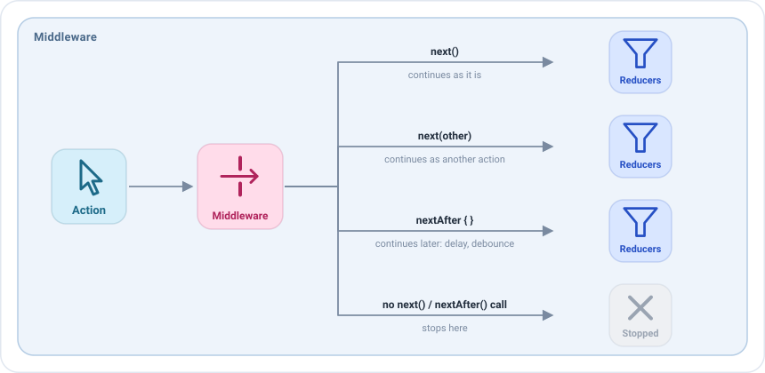

Middlewares¶
A middleware is a checkpoint: it sees an action before the reducers and the side effects, and decides what happens to it.

| In the middleware | Effect |
|---|---|
next() |
Continues as it is, to the next middleware and then to the reducers. |
next(other) |
Is replaced: other continues instead. |
nextAfter { } |
Continues later, when the block finishes. The screen keeps working meanwhile. |
Doesn't call next |
Stops here. The reducers and the side effects never see it. |
state |
The current state of the screen, readable before and after next(). |
dispatch(action) |
Dispatches a new action. |
Most screens don't need middlewares. They shine for things that apply to many actions and that the business logic shouldn't know: analytics, logs, debounce, feature flags, simulated latency in a test build...
Your first middleware¶
Middlewares are declared in the middlewares block of the setup, for a type of action. This one logs every action of
the screen and lets it continue:
middlewares {
add<HomeAction> { action ->
println("The user did $action")
next()
}
}
Remember call next, only once
If you forget it, the action stops there and the screen seems to ignore it. If you call it twice, the app fails with an error, because an action can only continue once.
Stopping an action¶
Not calling next stops the action. For example, to ignore taps on a feature that is disabled:
middlewares {
add<HomeAction.FriendClicked> {
if (featureFlags.profilesEnabled) next()
}
}
Replacing an action¶
next(other) lets another action continue instead of the received one:
middlewares {
// A blank query is the same as clearing the search
add<HomeAction.QueryWritten> { action ->
if (action.query.isBlank()) next(HomeAction.SearchCleared) else next()
}
}
Waiting: delays and debounce¶
nextAfter lets the action continue when its block finishes, without blocking the screen. Inside the block, stop()
discards the action.
With an id, a new nextAfter with the same id cancels the one that is still waiting. That is a debounce: while
the user keeps typing, only the last query continues.
middlewares {
add<HomeAction.QueryWritten> { action ->
nextAfter(id = "search") {
delay(300)
if (action.query.length < 2) stop()
}
}
}
For a fixed delay, middlewareDelayOf creates the middleware for you:
middlewares {
// Every refresh waits two seconds.
// This can be useful, for example, to see the loading state in a test build
add(middlewareDelayOf(HomeAction.RefreshRequested::class, 2.seconds))
}
nextAfter also accepts a timeout: if the block doesn't finish in time, the block is cancelled, the action doesn't
continue, and onTimeout runs instead. In this example, a refresh that takes more than one second is reported as a
failure:
middlewares {
add<HomeAction.RefreshRequested> {
nextAfter(
timeout = 1.seconds,
onTimeout = { dispatch(HomeAction.SideEffects.QueryFailed) }
) {
// A task that takes more than 1 second
}
}
}
Reading the state¶
A middleware can read the state of the screen with state, before and after calling next(). It can't change it:
the state only changes in the reducers. To change it, the middleware dispatches an action.
Before next(), state is the state the action finds, before the reducers apply it. Use it to decide the path of
the action. For example, ignore the taps on a friend while a dialog is open:
middlewares {
add<HomeAction.FriendClicked> {
if (state.dialog == null) next()
}
}
After next(), state is the new state: when next() returns, the rest of the middlewares and the reducers have
run. Use it to see what the action changed. This middleware logs only the actions that changed the state:
middlewares(MiddlewarePosition.Last) {
add<HomeAction> { action ->
val before = state
next()
if (state != before) println("$action changed the state to $state")
}
}
Note
After next(), the state is the new one only if no middleware after this one delays the action with nextAfter or
stops it. With MiddlewarePosition.Last nothing can be in between, so it is always the new state.
While waiting, the block of nextAfter can also read state: it is the state at the moment it is read, after the
wait, which can be different from the one the action found. This example waits a moment and only continues if no dialog
has been opened meanwhile:
middlewares {
add<HomeAction.QueryWritten> { action ->
nextAfter(id = "search") {
delay(300)
if (state.dialog != null) stop()
}
}
}
Where a middleware runs¶
By default the middlewares run in the order they are written. A block can place its middlewares before or after the rest, wherever it is written:
MiddlewarePosition |
Runs | Use it for |
|---|---|---|
First |
Before the rest | Deciding the path of every action first: a session check, a feature flag. |
InPlace (default) |
Where the block is written | The middlewares of the screen. |
Last |
After the rest, right before the reducers | Observing the new state: when next() returns, the reducers have run. |
For example, this middleware runs before all the others and checks the session of the user. If the session is active,
the action continues as usual; otherwise next() is not called, so the action stops and none of the pieces of the
screen see it:
middlewares(MiddlewarePosition.First) {
add<HomeAction> { if (session.isActive) next() }
}
The position is especially useful when you write plugins. A plugin is installed in many screens, so it
can't depend on where it is written: with First it sees every action before the pieces of the screen, like the
session check above, and with Last it sees the new state after the reducers, like the backup of the state.
The rules¶
- Call
nextonce, now or later withnextAfter. - Don't publish events. To tell the view something, dispatch an action with
dispatch(action)and let a side effect publish the event. - Keep the business logic in the side effects. A middleware decides the path of the action; the work it starts belongs to a side effect.
Middlewares as values¶
A middleware can also be created with middlewareOf or middlewareDelayOf, instead of being written inline.
This would be how a middleware is implemented as value:
class HomeViewModel : EmaViewModel<HomeState, HomeAction, HomeEvent>(HomeState()) {
private val blankQueryAsClear = middlewareOf(HomeAction.QueryWritten::class) { action ->
if (action.query.isBlank()) next(HomeAction.SearchCleared) else next()
}
override fun setup() = source {
middlewares { add(blankQueryAsClear) }
// ...
}
}
It could also be received in the constructor, so a QA build could add latency to the screen without touching it:
class HomeViewModel(
private val tuning: List<EmaMiddleware<HomeState, HomeAction, *>> = emptyList()
) : EmaViewModel<HomeState, HomeAction, HomeEvent>(HomeState()) {
override fun setup() = source {
middlewares(MiddlewarePosition.First) { tuning.forEach { add(it) } }
// ...
}
}